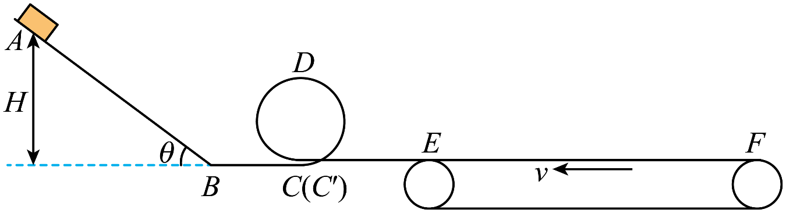

传送带问题的能量流动
一质量为 m 的小物块以速度 v_{0} 冲上同向运动的传送带，传送带以恒定速度 v 匀速转动，已知 v>v_{0}。小物块与传送带间的动摩擦因数为 \mu，运动到共速小物块和传送带的位移分别为 s_{1}、s_{2}
摩擦力对小物块做功 W_{f块}，摩擦力对传送带做功 W_{f带}，摩擦产热Q
\mid W_{f块} \mid = W_{f带} + Q
摩擦力做功角度：
s_{2}=s_{1}+\Delta s
fs_{2}=fs_{1}+f\Delta s
\mid W_{f带} \mid = W_{f块} + Q
摩擦产热 Q=f\Delta s，\Delta s 是相对位移
动能定理角度：
分别对传送带和小物块应用动能定理
\begin{cases} W_{电}+W_{f带}=0\Rightarrow W_{电}-\mid W_{f带}\mid=0 \\ W_{f块}=\Delta E_{k} \end{cases}
W_{电} 是电机对传送带多做的功，满足 W_{电}=\mid W_{f带}\mid=W_{f块}+Q=Q+\Delta E_{k}，即电能转化成了内能和小物块的动能
如果小物块冲上斜向上的传送带，功能转化关系就变成了 W_{电}=Q+\Delta E_{k}+\Delta E_{p}
练习
某兴趣小组设计了一个玩具轨道模型如图所示。倾角为 \theta=37^{\circ} 的粗糙倾斜轨道 AB 足够长，其与竖直光滑圆环轨道间通过一段水平光滑直轨道 BC 串接，竖直圆环的最低点 C 和 C' 相互靠近且错开，接着再串接一段水平粗糙直轨道 C' E，轨道末端 E 点与水平传送带（轮子很小）的左端刚好平齐接触。已知圆环半径为 R=0.2\,m ，直轨道 C' E 段长为 L=0.2\,m ，传送带长度 EF=2.2\,m ，其沿逆时针方向以恒定速度 v=2\,m /s 匀速转动，小滑块与传送带及各段粗糙轨道间的动摩擦因数均为 \mu=0.25，所有轨道在同一竖直面内，且各接口处平滑连接。将一质量为 m=200\,g 的小滑块（可视为质点）从倾斜轨道上的某一位置静止释放，重力加速度 g 取 10\,m /s^2，求：

- 若小滑块首次进入竖直圆环轨道刚好可以绕环内侧做完整的圆周运动，则其在圆环轨道最高点 D 时的速度大小 v_D；
- 满足上一问的条件下，小滑块首次滑上传送带速度减为零时距离 E 点多远？其首次滑上传送带并返回 E 点的过程中，与传送带间因摩擦产生的热量 Q；
- 为保证小滑块始终不脱离轨道，并能滑上传送带，小滑块从倾斜轨道上静止释放的高度 H 应满足什么条件？小滑块最终停在哪？